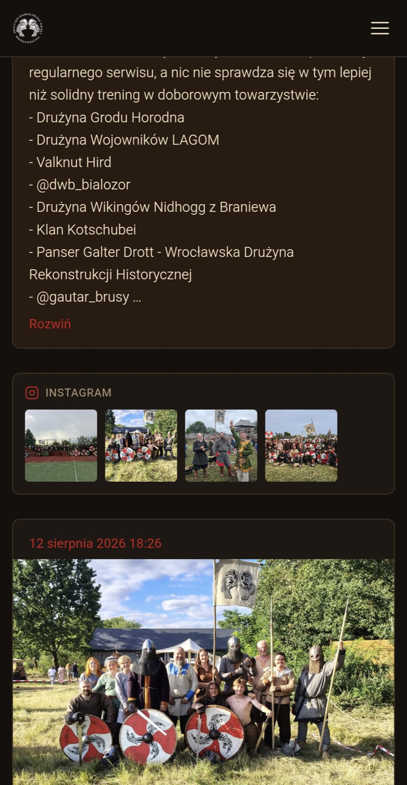
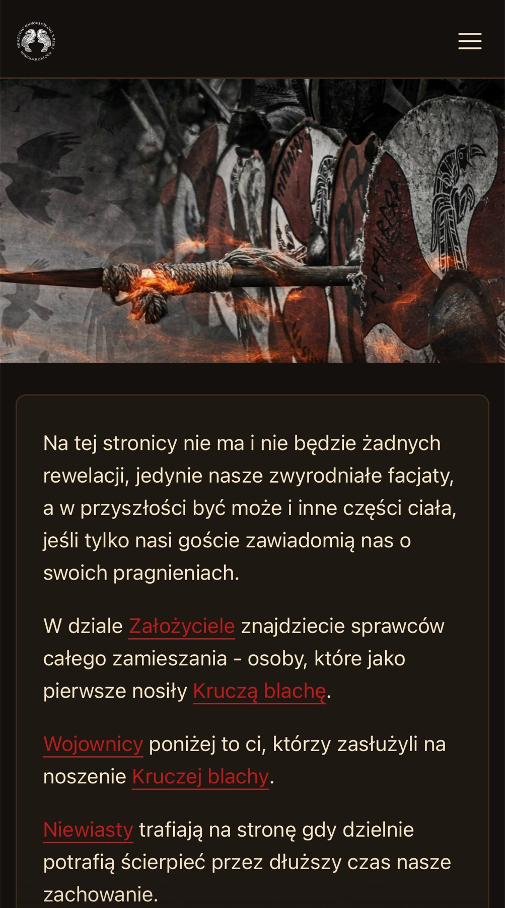
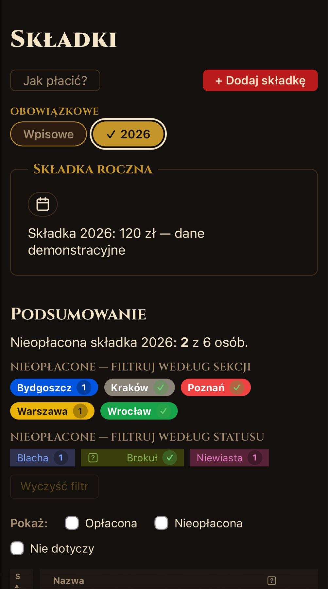
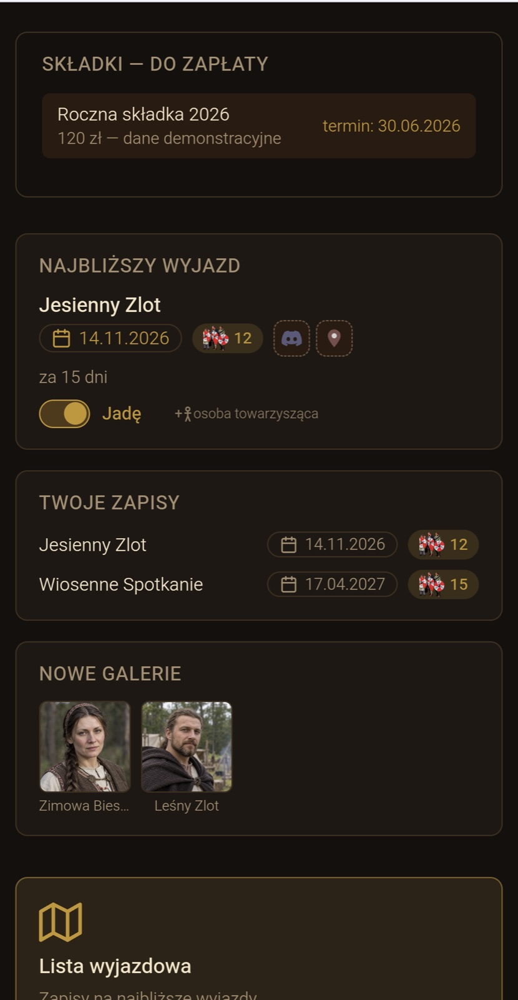
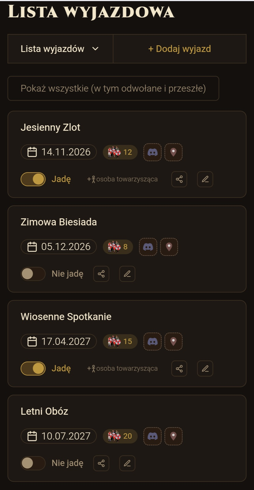
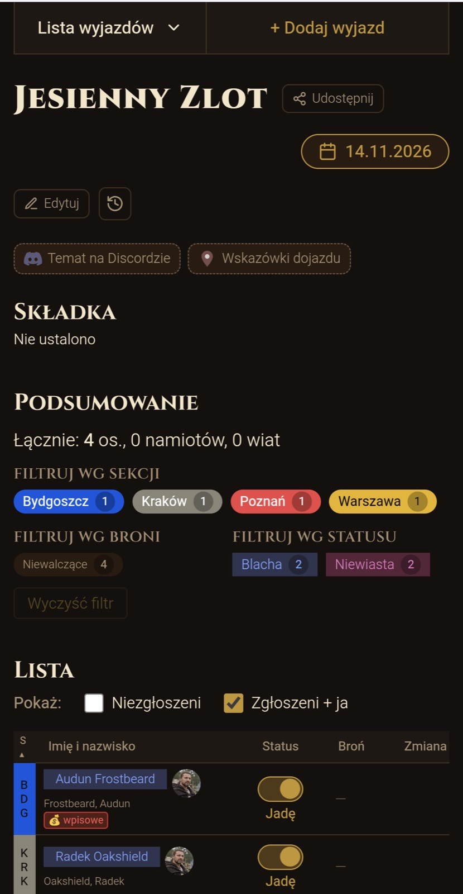
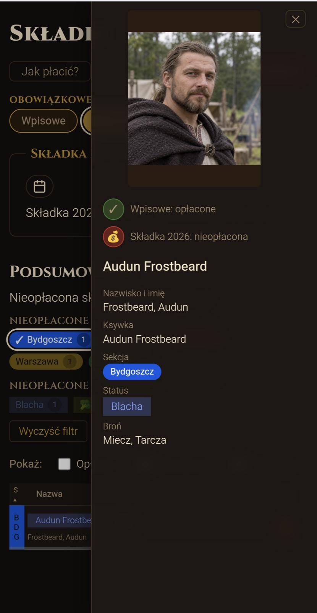

Selected work ← All projects
CUSTOM PLATFORM · MOBILE FIRST
Krucze Galery
A custom-built public website and private workspace for the reenactment community Bractwo Wojowników Kruki.

PUBLIC SITE
The group, in public.
Facebook posts are gathered automatically, with Instagram, YouTube and a gallery of warriors alongside them.
Select a screen to enlarge it.


MEMBERS ONLY
A workspace for the group.
Members manage events, fees and profiles, and upload their own photos. Administrators and moderators manage members and group branches.
Private views use fictional people, photos, events and payment data.




SEE IT IN ACTION
Filter. Open. See the details.
Filter by branch, then open a member’s profile and payment status.
A sequence of real app screens with fictional data.

BUILT AROUND EXISTING TOOLS
Google Cloud meets Google Drive.
A Google Cloud backend reuses the group’s existing Google Drive archive for photos and files.